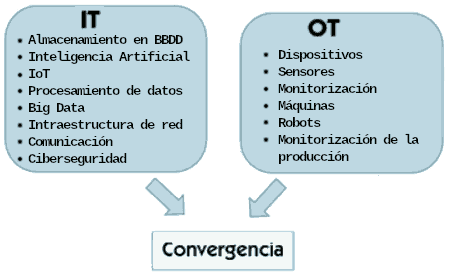

No es lo mismo utilizar una cámara digital para fotografiar un rostro que un ordenador realice un reconocimiento facial. En ambos casos se trata de tecnología y ambos casos son ejemplos de digitalización de un proceso, pero su complejidad e impacto es muy diferente.
En este sentido, se diferencia dos grandes grupos de tecnologías:
- Tecnologías de la Información (IT): dedicadas al procesamiento de datos. Tambien llamadas digitalización en negocio, se trata de herramientas digitales enfocadas en el procesamiento de datos y en la gestión de la información. Son como el cerebro de la empresa: ayudan a organizar las cosas, a comunicarse con otras personas y a tomar decisiones inteligentes. Las características principales de un entorno IT son:
- Orientado principalmente en la gestión, almacenamiento, procesamiento y transmisión de información.
- Se encarga de sistemas empresariales, como los sistemas ERP, bases de datos, servidores y redes de ordenadores.
- Incluye el desarrollo de software, implementación y mantenimiento de aplicaciones.
- Gestiona la infraestructura de comunicaciones.
- Ciberseguridad. Gestiona la seguridad de los elementos mencionados anteriormente, implementando medidas para asegurar la integridad, confidencialidad y disponibilidad de los datos.
- Tecnologías de la operación (OT): enfocadas en la automatización. También llamadas digitalización en planta, se trata de herramientas digitales que se enfocan en el control y la automatización de los procesos físicos en entornos domésticos, industriales y comerciales. Serían como los brazos y las piernas de la compañía: máquinas, brazos robóticos, sensores... en definitiva, tecnologías específicas para la fabricación industrial, el transporte, la producción de energía, etc. Las características principales de un entorno OT son:
- Se centra en los sistemas físicos y cómo interactúan entre ellos (máquinas, sensores, dispositivos de control).
- Suele operar en tiempo real para controlar y supervisar procesos críticos que requieran respuestas inmediatas.
- Garantiza la seguridad física de las operaciones y protección de los trabajadores/as.
Tradicionalmente, las tecnologías IT y OT han funcionado de manera independiente, mientras que en los sistemas modernos el software es el responsable de coordinar el mundo OT. Muchos de estos sistemas utilizan la IA para recibir y analizar los datos que reciben de las cadenas de producción, generando órdenes para que las máquinas funcionen de manera más eficiente, fiable y segura. Sin embargo, esta convergencia también presenta inconvenientes. Cuando hay infraestructuras críticas (por ejemplo una central hidroeléctrica) que están distribuidas, la exposición a un ataque puede ser mayor. Esta vulnerabilidad puede facilitar el espionaje o el sabotaje.
Diferencias entre IT y OT: https://www.youtube.com/watch?v=y52JeCHvTYY
Evolución de las IT-OT
Las tecnologías IT y OT han evolucionado desde una total autonomía, hasta la interdependencia actual. La evolución puede dividirse en 5 etapas:
- IT y OT diferenciadas (1970-1990): los sistemas IT y OT funcionaban por separado en la mayoría de las organizaciones. Cada tecnología se centraba en su campo con escasa comunicación entre ambos sistemas.
- Convergencia (1990-2000): a medida que la tecnología avanza, se produce una convergencia gradual de IT y OT. Se comienzan a establecerse estándares de comunicación para conectar sistemas de control industrial con los sistemas de IT.
- Ciberseguridad (2000-2010): con los avances en sensores, redes industriales la computación en la nube y el Internet de las cosas (IoT), las organizaciones comenzaron a gestionar grandes volúmenes de datos y de IT y OT. Ello aumentó la superficie de ataque cibernético y la necesidad de implementar medidas de segurida para proteger sus sistemas de control industrial y asegurar la integridad de los datos.
- IA y edge computing (2010-2020): las empresas comienzan a utilizar la IA para optimizar operaciones, así como la computación en el borde (edge computing) para procesar los datos cerca de la fuente en lugar de enviarlos a la nube. Esto es esencial para poder reaccionar en tiempo real en entornos industriales.
- Integración completa y gemelos digitales (actualidad): la tendencia actual es la integración completa IT y OT, de manera que se crea un "gemelo digital" de la operación física para simular y optimizar procesos. Esto permite una toma de decisiones más precisa y una mayor eficiencia en la gestión de archivos y recursos.
Gemelos digitales: https://youtu.be/6Xg8r5BUGjA?si=3RPKMlX0p-4ee-_x